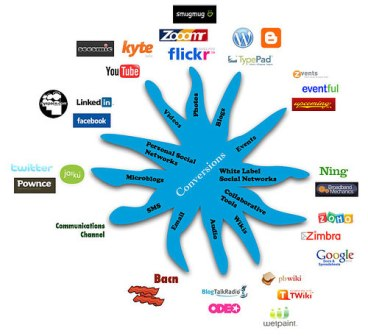

|
Seguro que utilizas a diario algunos de los servicios que aparecen en la imagen. En el vídeo también los has visto. ¿Conoces su funcionamiento? ¿Y sus aplicaciones? En este punto adquirirás los conocimientos necesarios para realizar los ejercicios de la tarea. Los blogs o bitácoras se analizan en profundidad en otro apartado de esta unidad.
|
|
|

|
|
|
Img 10. Servicios de la Web social Imagen de ARTedFACTUC con licencia Creative Commons |
U10 - Información digital y Web
3. Servicios de la Web social
Pre-conocimiento
¿Sabías que hoy en día la tendencia en la enseñanza on-line es personalizar el propio entorno de aprendizaje con herramientas de la Web social?
Se trata de integrar una serie de herramientas en el conjunto de recursos que utilizamos para nuestra formación on-line. Ese conjunto de recursos se denomina LMS (Learning Management System), en nuestro caso: la platafomra Moodle, y es un entorno de aprendizaje que se tiende a ampliar con las aplicaciones sociales que cada estudiante utiliza habitualmente; de manera que mediante la relación con los demás, el compartir conocimientos, prácticas, dudas,... el aprendizaje se convierta en colaborativo.
Un artículo muy interesante sobre estas herramientas y la aplicación de cada una lo podéis encontrar aquí:
http://elearningenred.blogspot.com/2011/04/es-tu-lms-parte-de-tus-redes-sociales.html